多线程
进程与线程
- 进程：正在运行的程序实例
- 私有空间，彼此隔离
- 多进程之间不共享内存
- 一般来说：进程=程序=应用，但是一个应用有时可以有多个进程
- 线程：进程中一个单一顺序的控制流
- 操作系统进行调度的最小单位
- 多个线程之间共享内存
- 包含在进程之中，是进程实际运作单位
- 区别与联系 一个进程可以包含（并发）多个线程 一个进程至少包含一个线程 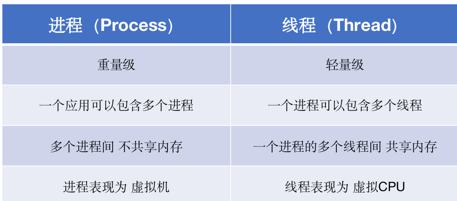
JAVA中多线程以及对线程的控制
创建线程的两种基本方法
- 建立
Thread类的子类 - 实现
Runnablel类的接口：更常用 - 任务与运行机制解耦，降低开销
- 更容易实现多线程资源共享
- 避免单继承带来的局限 注意：直接调用run方法只会执行同一个线程中的任务，而不会启动新线程
public class New {
public static void main(String[] args) {
new Thread1().run();
new Thread(new Thread2()).start();
}
}
class Thread1 extends Thread{
@Override
public void run(){
System.out.println("new1");
}
}
class Thread2 implements Runnable{
@Override
public void run(){
System.out.println("new2");
}
}
匿名表达式语句创建线程
Runnable r = () ->(
System.out.println("...");
);
new Thread(r).start();
终止线程
- run方法正常退出，线程自然终止
- 因为一个没有捕获的异常终止了run方法，线程意外终止
线程的状态
- 计时等待状态： 有几个方法有一个超时参数，调用他们导致线程进入计时等待状态
- 等待状态
- 阻塞状态
- 当一个线程试图获得一个内部的对象锁，而该对象🔓被其他线程持有，则该线程进入阻塞状态
- 当所有其他线程释放该🔓，并且调度器允许本线程持有它时，该线程将变成非阻塞状态 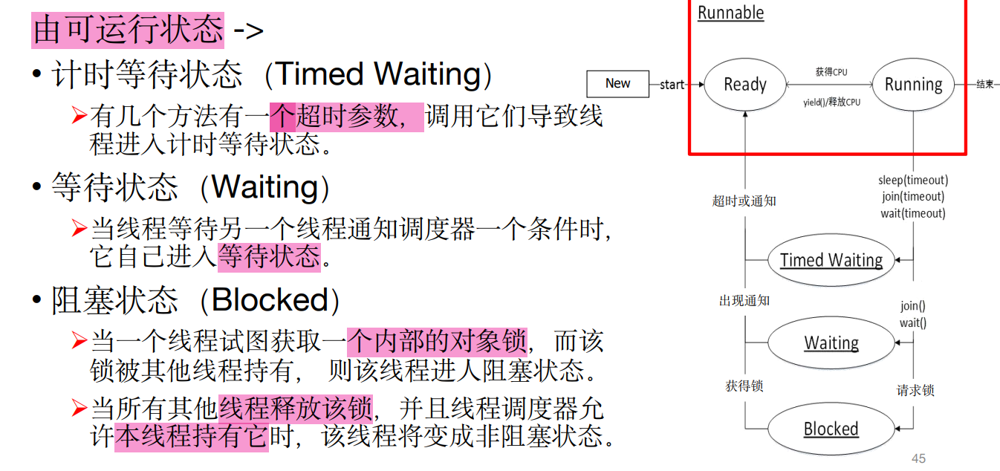
线程的阻塞
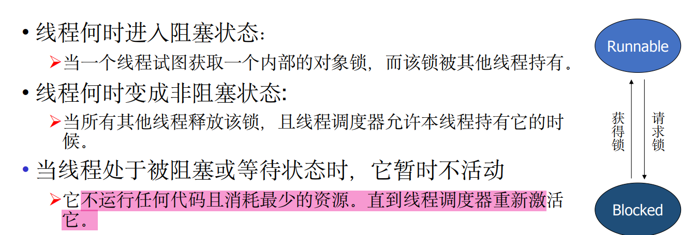
线程的等待
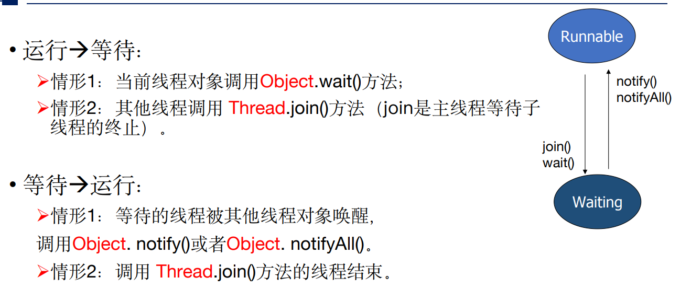
线程计事等待
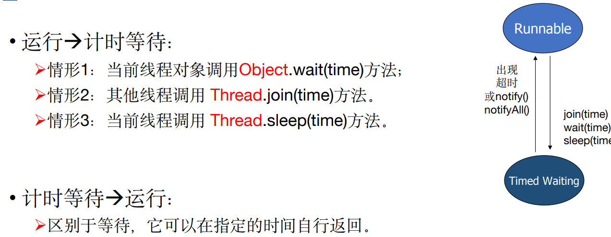
中断线程
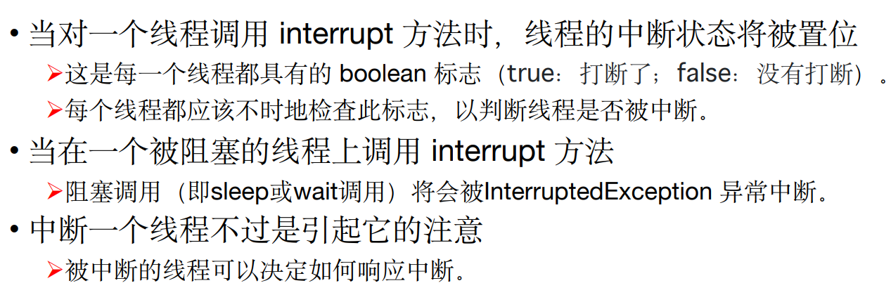
线程优先级
- 每一个线程都有优先级
- 默认情况下，一个线程继承他的父线程的优先级
- 可以用
setPriority(int newPriority)方法（1～10，默认5）提高或者降低任何一个线程的优先级 - 调度器决定运行一个新线程的时候，会首先在具有高优先级的线程中进行选择，使低优先级线程完全饿死
- 线程的优先级高度依赖于系统 在Liunx中的JVM虚拟机，线程的优先级将被忽略
守护线程
setDaemon()方法标识：thread.setDaemon(true)- 守护线程的唯一作用是为其他线程提供服务 计时线程：定时发送信号给其他线程
- 结束时刻：run方法运行结束后或者main函数结束后
用法总结
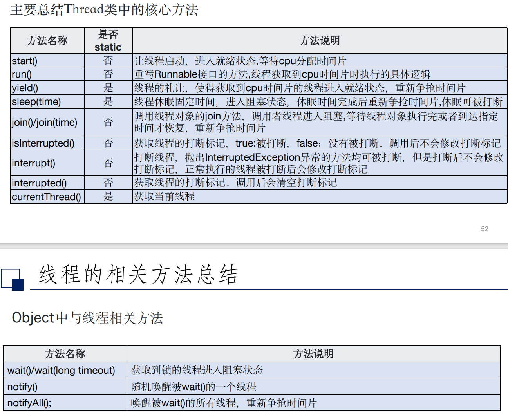
线程同步
- 原子操作:不能被中断的一个或者一系列操作，要么完全执行，要么完全不执行
多线程模式下对共享变量的读写
必须保证一组指令以原子方式执行:即某一个线程执行时，其他线程必须等待 通过加锁和解锁的操作来实现 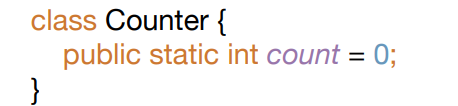 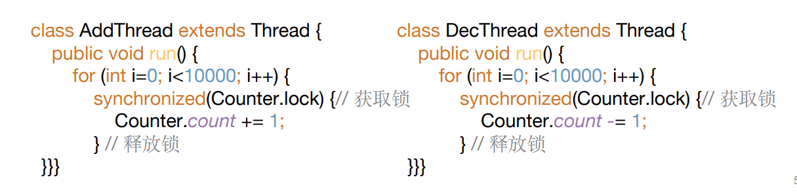
线程死锁
假设有两个线程A和B，以及两个资源X和Y。线程A已经占有了资源X，同时它还需要资源Y才能继续运行；而线程B已经占有了资源Y，同时它还需要资源X才能继续运行。这样，线程A和线程B就会相互等待对方释放资源，但都不肯先释放自己占有的资源，形成了死锁。 避免死🔓：线程获取🔓的顺序要一只，都按照相同的顺序对不同的资源上🔓
多线程的应用：生产者-消费者模式
- 三部分
- 生产者：产生数据的部分
- 消费者：处理数据的模块（可以是类、函数、线程、进程等）
- 内存缓冲区 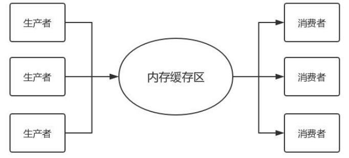
- 内容：
- 如果生产者生产速度过快，消费者消费的很慢，并且缓存区达到了最大时。 缓存区会阻塞生产者，让生产者停止生产，等待消费者消费了数据后，再 唤醒生产者
-
当消费者消费速度过快时，缓存区为空时。缓存区则会阻塞消费者，待生 产者向队列添加数据后，再唤醒消费者
-
代码实例：ppt
- 优点：
- 并发（异步）：生产者和消费者各司其职，都只需要关心缓冲区；通过异步的方式支持高并发
- 解耦：生产者和消费者进行解耦，通过缓冲区通讯
任务与线程池
不想看了“：D
任务
线程池
- 提前在线程池中创建线程，任务来时线程执行任务，执行完毕后线程休息，等待下一个任务（不会在完成一个任务后就销毁该线程）
- 执行策略： 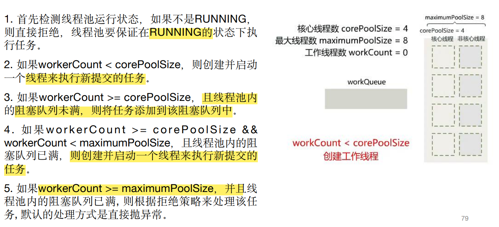